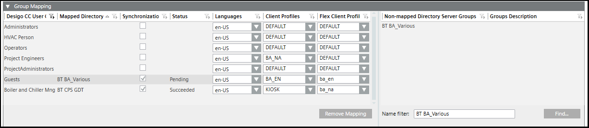

Assigning Domain Groups to User Groups in a Distributed System

- A global user group exists and is configured.
NOTE: For each used domain group, a Desigo CC global user group must exist. - A connection to the domain server is established.
- In the master project, select Project > System Settings > Security.
- Select the LDAP tab and open the Group Mapping expander.
- Enter a group name in the Name filter field. You can use an asterisk (*) as a wild card at the end of the filter name, for example, CH DEV1*. In a large system, avoid using an asterisk at the beginning of the search phrase because it can result in excessive search times.
- Click Find.
- The groups display in the Non-mapped Directory Server Groups list.
- Do one of the following:
- To select via drag-and-drop, do the following:
a. Select a group from the Non-mapped Directory Server Groups list.
b. Drag it onto the Mapped Directory Server Groups list.
NOTE: If a group is already assigned, you can assign a new group by replacing the existing group or cancelling the assign operation.
c. Using the drop-down menu for each, modify the Languages, Client Profile, and Flex Client Profile as needed. NOTE: Any changes made in the LDAP tab will overwrite any selections for an existing user in the Users tab. If an individual is a member of two server groups, the information for the last server group added applies to that user.
Select the Synchronization check box. The Status changes toPending.
d. Click Save .
. - To select manually, do the following:
a. Select the name in the Desigo CC User Groups column which matches the Mapped Directory Server Groups.
b. Select the name in the Mapped Directory Server Groups list.
c. Using the drop-down menu for each, modify the Languages, Client Profile, and Flex Client Profile as needed. NOTE: Any changes made in the LDAP tab will overwrite any selections for an existing user in the Users tab. If an individual is a member of two server groups, the information for the last server group added applies to that user.
d. Select the Synchronization check box: The Status changes toPending.
e. Click Save. - (Optional) Remove an assigned server group mapping by selecting a row and then by clicking Remove Mapping.
- Click Synchronize
 .
. - The Status changes to
Succeeded. - All users of that group are assigned to and enabled in the Group Configuration expander of the Security tab. For new users the Full name and Comment fields are imported with those attributes from the active directory.
- Repeat steps 4 to 7 for the other required domain groups.

NOTE:
If a local account is part of a global group that gets synchronized, this account needs to get promoted to global. As a result, this account’s memberships in all local groups expires, so that it can only be assigned to global groups.
When synchronizing a local group which has an existing global account as member, this membership is ignored, and the global account is not added to the local group.